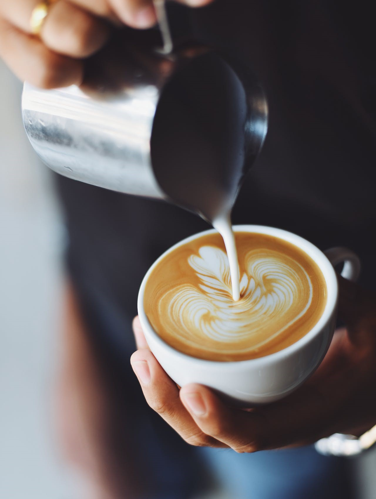

Ha szereted a kávét, és mindig is érdekeltek a kávészakma titkai, akkor itt a helyed! A Kezdő Barista
Workshophoz csatlakozva elmerülhetsz a kávézás művészetében és tudományában. Tapasztalt baristáink
segítségével megtanulhatod, hogyan készítsd el a tökéletes eszpresszót, hogyan habosítsd fel a tejet a
latte arthoz.
A workshop során nem csak elméleti tudást szerezhetsz, hanem gyakorlati tapasztalatokat is
professzionális kávégépek használatával kapcsolatban. Készülj fel arra, hogy egy új világ tárul fel
előtted, és megtapasztalhatod, hogy a kávés művészet nem csak szakma, hanem szenvedély is.
Gyere, csatlakozz hozzánk, és hagyd, hogy a kávé szeretete összekapcsoljon bennünket a Latte Lounge-ban!
Haladó Barista Workshop
Ha szeretnél a kávézás mestereinek sorába lépni, akkor ez a workshop neked szól!
Ez a workshop mélyebben ás a kávészakma rejtelmeibe, és lehetőséget teremt arra, hogy olyan tudást
szerezz, amely egy tapasztalt barista szakértelmét tükrözi.
Itt nem csak a kávé elkészítési technikáit tanulhatod meg, hanem a kávészemek eredetétől kezdve a
pörkölés művészetéig és az ízek harmóniájáig minden fontos részletre kiterjedő ismereteket
szerezhetsz. Gyakorlati tréningjeink során különböző kávéfajtákat, pörkölési profilokat és
különleges kávékészítési módszereket fedezhetsz fel.
A Haladó Barista Workshopon részt venni azt jelenti, hogy készen állsz arra, hogy ne csak egy italt
készíts, hanem egy kávéélményt teremts. Hozd magaddal a szenvedélyed és nyitottságod, és készülj
arra, hogy az itt megszerzett tudást otthoni kávézódban is kamatoztathasd.
Gyere, és mélyítsük el együtt a kávé szeretetét és tudományát a Haladó Barista Workshopon!
Latte Art Workshop
Ez a Latte Art Workshop több, mint egyszerű kurzus - itt a kávéművészet rejtelmeibe pillanthatsz be.
Kezedben a lehetőség, hogy megtanuld, hogyan varázsolhatsz egy egyszerű kávéból lenyűgöző
műalkotást, ahol a tejhab nem csak díszítés, hanem kifejező eszköz.
Az oktatóink tapasztalt kávéművészek, akik szívesen osztják meg a latte art titkait. Megismerheted a
különböző tejhabkészítési technikákat, a legnépszerűbb mintákat, és tanulhatsz arról, hogyan adj
hozzá személyes stílust a kávé művészetéhez.
Gyere, tölts velünk egy napot és hagyd, hogy a kávé ne csak ízével, hanem látványával is
elvarázsoljon a Latte Art Workshop-on!

Kávékóstoló Workshop
Csatlakozz hozzánk egy izgalmas kávékóstoló utazásra, ahol a kávé nem csak ital, hanem valódi élmény.
A Kávékóstoló Workshopunkon lehetőséged lesz felfedezni kávéink különböző zamatvilágait, és
megismerni azokat a finom részleteket, amelyek egy jó kávét nagyszerűvé tesznek.
Tapasztalt kávészakértőink segítségével bebarangoljuk a különböző kávéfajták eredetét, a pörkölés
művészetét és az ízprofilok rejtelmeit. Próbáld ki az egyedi pörköléseinket, és ismerd meg, hogyan
határozzuk meg a kávé minőségét és karakterét.Ez a workshop nem csak az ízlelőbimbóidat kényezteti
el, hanem mélyebb betekintést nyújt a kávé világába.
Csatlakozz hozzánk, és fedezd fel a kávézás új dimenzióit a Latte Lounge-ban!